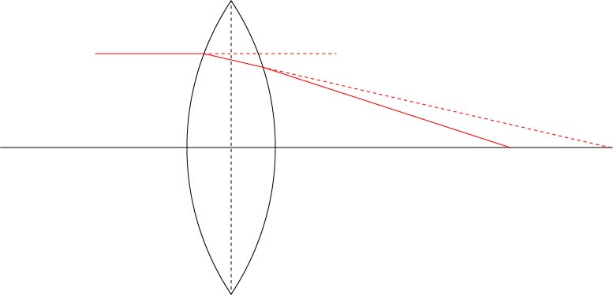
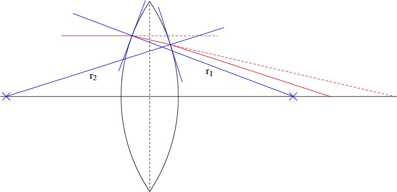

レ
まずは以下の図のような光線を考えましょう．

図からわかるように，
左側から平行な光がレンズに入射される
レンズの左側と右側でそれぞれ光線が屈折する
ことがわかります．
どの程度屈折するの？
かは，レンズ表面の接線と光線とのなす角度によりますので，

のような左，右，それぞれの曲率半径を考えるとわかりやすいかと思います．
ここで，ｒ１，ｒ２はレンズの左，右のカーブの曲率半径を示しており，今回はとりあえず異なる値としています．
また，この業界のルールとして（たぶん．．．），
レンズ、鏡等の曲面から測り始め、その曲面の曲率中心 までの距離を曲率半径と称するのであるが、面から左に曲率中心があれば、マイナス、逆 に右にあればプラスとなる。
らしいので，ｒ２はマイナスの値を持つものとなります．（このサイトを参考にしました）
さて．．．もう複雑な図となってきています．．．．
そこで，まずは，平行光がレンズによって屈折していく様子を考えましょう．